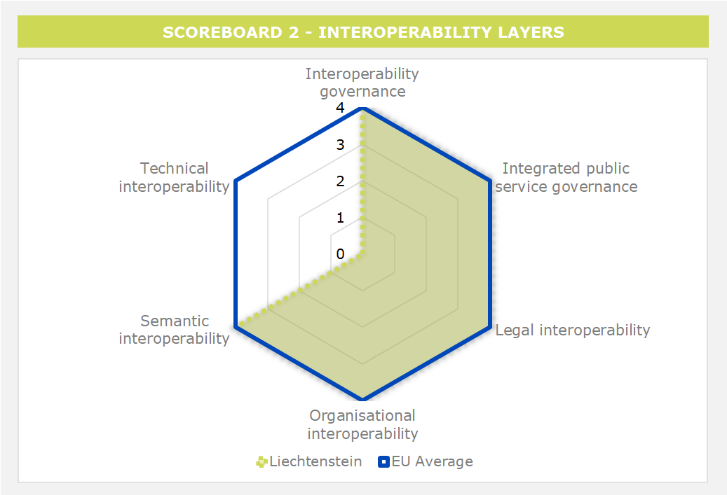
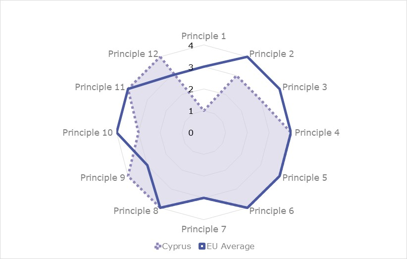
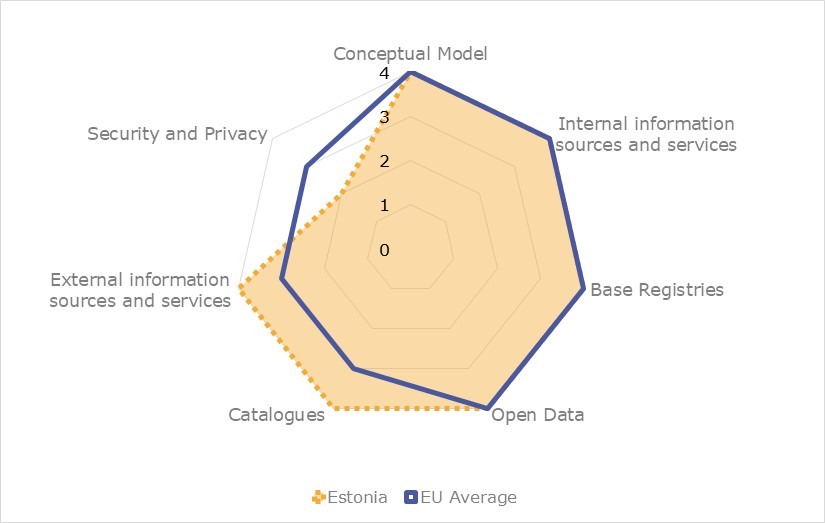
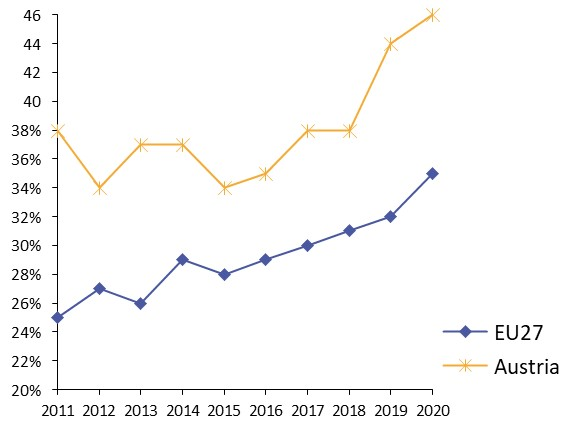

ISA2
 Table of Contents
Table of ContentsDigital Public Administration factsheet 2022
Liechtenstein
2 Digital Public Administration Highlights 10
3 Digital Public Administration Political Communications 12
4 Digital Public Administration Legislation 15
5 Digital Public Administration Governance 21
6 Digital Public Administration Infrastructure 24
7 Cross Border Digital Public Administration Services for Citizens and Businesses 28
Country
Profile
1
Liechtenstein, even though a member of the EEA, is not required to supply complete data to Eurostat due to its small size and population. As a result, there are no values for the usual indicators contained in this factsheet; instead, similar indicators are quoted from the UN E-Government Survey 2020.
The United Nations started assessing the global eGovernment development through its initiative “Benchmarking E-government: Assessing the United Nations Member States” in 2001. Since then the United Nations E-Government Survey has gained wide acceptance as a global authoritative measure of how public administrations provide electronic and mobile public services. The United Nations E-Government Survey measures the development of eGovernment using the E-Government Development Index (EGDI), which has the following three components:
According to the United Nations E-Government Survey, Liechtenstein has the following e-government indicators for 2020:
[Highest score: Denmark 0.9758]
[Highest score: Estonia – 0.9941]
[Highest score: Liechtenstein – 1]
[Highest score: Iceland – 0.9525]
[Highest score: Estonia – 1.0000]
Source: UN E-Government Survey 2020
In 2017, the European Commission published the European Interoperability Framework (EIF) to give specific guidance on how to set up interoperable digital public services through a set of 47 recommendations. The picture below represents the three pillars of the EIF around which the EIF Monitoring Mechanism was built to evaluate the level of implementation of the EIF within the Member States. It is based on a set of 71 Key Performance Indicators (KPIs) clustered within the three main pillars of the EIF (Principles, Layers and Conceptual model), outlined below.

Source: European Interoperability Framework Monitoring Mechanism 2021
For each of the three pillars, a different scoreboard was created to breakdown the results into their main thematic areas (i.e. the 12 principles of interoperability, the interoperability layers and the components of the conceptual model). The thematic areas are evaluated on a scale from one to four, where one means a lower level of implementation and 4 means a higher level of implementation. The graphs below show the result of the third EIF Monitoring Mechanism data collection exercise for Liechtenstein in 2021.

Source: European Interoperability Framework Monitoring Mechanism 2021
Liechtenstein’s results in Scoreboard 1 show an overall fair performance in the implementation of the EIF Principles, despite the lack of data for Principles 2 (Inclusion and Accessibility), 4 (Reusability), 6 (User-centricity), 9 (Multilingualism) and 10 (Administrative simplification). Liechtenstein gets a high score of 4 on the implementation of Principle 7 (Inclusion and accessibility), scoring above the EU average. Potential areas for improvements concern the implementation of Principles 12 (Assessment of Effectiveness and Efficiency) for which the score of 2 shows a lower-medium performance related to the evaluation by public administrations of the efficiency and effectiveness of interoperability solutions and technological options considering user needs, proportionality and the balance between costs and benefits (Recommendation 19).

Source: European Interoperability Framework Monitoring Mechanism 2021
The results of Liechtenstein in Scoreboard 2 illustrate a good performance with scores 4 in all layers, despite the lack of data for the technical interoperability. Liechtenstein’s areas of improvement concern the better implementation of the recommendations related to the interoperability governance. Particularly, Liechtenstein scores 2 in the consultation of relevant catalogues of standards, specifications and guidelines at national and EU level, in accordance with the country’s NIF, when procuring and developing ICT solutions (Recommendation 23).

Source: European Interoperability Framework Monitoring Mechanism 2021
Despite the lack of data for open data, Liechtenstein’s scores analysing the Conceptual Model in Scoreboard 3 highlight an overall good performance in the implementation of recommendations associated with security and privacy, the internal and external information sources and services, base registries, as well as catalogues. However, areas for improvements concern the implementation of recommendations related to the conceptual model it-self. More specifically, Liechtenstein public administrations scores 1 on their use of the conceptual model to design new services or reengineer existing ones and reuse, whenever possible, existing service and data components (Recommendation 34). Furthermore, in the area of security and privacy, the use of trust services according to the Regulation on eID and Trust Services as mechanisms that ensure secure and protected data exchange in public services is only partial and could be improved (Recommendation 47).
Additional information on Liechtenstein’s results on the EIF Monitoring Mechanism is available online through interactive dashboards.
This section of the factsheet is meant to present the country’s performance on the main eGovernment indicators according to the latest eGovernment Benchmark report, which monitors the development of eGovernment in Europe.
At the present moment, the report does not analyse the state of play of eGovernment in Liechtenstein.

Digital Public Administration Highlights
2
Digital Public Administration Governance |
Between 2020 and 2021, the Government of the Principality of Liechtenstein established a new National Cyber Security Unit. The National Cyber Security Unit is the central office for all matters related to cyber risks. It serves as a hub and intermediary for the general public, companies, operators of critical infrastructure and authorities.
Digital Public Administration Infrastructure |
In February 2021, the public administration’s internet presence was put on a new footing with the launch of serviceportal.li. As a first step, serviceportal.li will be available for private individuals only. Then, between 2021 and 2022, the portal solution will be expanded with an area for companies as well as personalised services. The website will be available in German and English. serviceportal.li provides the basis for an interactive and user-friendly use of information and digital offers of the administration

Digital Public Administration Political Communications
3
Digital Agenda – Government Programme
The Government Programme 2017-2021, based on the Tallinn Declaration on eGovernment, currently defines activities for the government and administration. The government’s main objective has been a continuous optimisation in terms of process efficiency and customer-friendly design for the national administration. This applies to administrative processes as well as to the concerns and needs of the population, companies and other stakeholders. In the course of this legislative period, a series of measures have strengthened the service of the State administration with a strong focus on electronic means of communication. The programme presented decisive opportunities and addresses some primary challenges posed by digitisation.
The Digital Agenda has been a central field of action for the legislature. There was a general consensus that administration services should be offered electronically and made available around the clock. In this context, there was also awareness that when official business is conducted via electronic means, data security and privacy must be a high priority.
eGovernment Strategy 2019-2023
The eGovernment Strategy is based on the knowledge gained from the implementation of an earlier strategy dating back a decade. In March 2019, the government presented its overarching considerations for future digitisation and formulated concrete fields of action articulated in objectives and measures. The new revised eGovernment Strategy includes a vision, principles and guidelines for the implementation of digital services as well as defined areas of action. The strategy will be implemented by means of individual projects.
Although the State administration relies heavily on eGovernment, citizens continue to enjoy non-electronic access to all administrative services. However, eGovernment should facilitate access to administrative services and make business transactions more efficient. The administration thus enables a customer-friendly, personal and competent service, both electronically and non-electronically.
No political communication was adopted in this field to date.
No political communication was adopted in this field to date.
No political communication was adopted in this field to date.
No political communication was adopted in this field to date.
No political communication was adopted in this field to date.
No political communication was adopted in this field to date.
No political communication was adopted in this field to date.
No political communication was adopted in this field to date.
Blockchain Partnership
On 1 February 2019, the Principality of Liechtenstein signed the declaration on joining the European Blockchain Partnership. The main objective of the partnership is to support and improve the delivery of cross-border digital public services by deploying a common European Blockchain Services Infrastructure with a shared governance model.
No political communication was adopted in this field to date.
No political communication was adopted in this field to date.
No political communication was adopted in this field to date.
No political communication was adopted in this field to date.
No political communication was adopted in this field to date.

Digital Public Administration Legislation
4
eGovernment Act
In autumn 2011, the Parliament adopted various laws of critical importance for the development of eGovernment, such as the eGovernment Act (eGovG) (register number 172.018.1 and 172.018.11), which promoted electronic communication and facilitated access to public authorities. This act mainly included provisions focused on electronic communication, identification and authentication in electronic commerce and electronic records management.
On 30 September 2020, the Parliament of Liechtenstein adopted Law No. 359 (eGovernment Law) containing amendments to the eGovernment Act. The new law entered into force on 1 January 2021.
On 15 December 2020, the eGovernment Ordinance implemented the eGovernment Act and subsequent amendments by regulating the details of electronic business transactions between public authorities, and authorities and individuals.
Amendment to the Service of Official Documents Act
In January 2012, the Amendment to the Service of Official Documents Act (ZustG) (register number 172.023 and 172.023.1) entered into force. It regulated the delivery of documents to be transmitted by authorities in execution of the laws as well as the delivery of documents of foreign authorities to be carried out by the authorities.
No legislation was adopted in this field to date.
Information Act
The Information Act (Informationsgesetz) entered into force in January 2000. It allowed any citizen to obtain files from the State and municipal bodies, as well as from private individuals who perform public tasks. Responses must be given in a ‛timelyʼ manner. This does not apply to documents under preparation. In addition, there are exemptions for protecting decision-making, public security, privacy and professional secrets, and to avoid disproportionate expenditure. Documents are released based on a balance of interests test. Appeals can be made to a court. The law also set rules on the openness of meetings of the Parliament, commissions and municipalities. The Information Act is supplemented by the Regulation on the Information Ordinance (Informationsverordnung) (register number 172.015.1).
Law on the Reuse of Public Sector Information
In 2008, a new Law on the Reuse of Public Sector Information (Law No. 172/016), implementing the Public Sector Information (PSI) Directive, was introduced in Parliament and published in the National Law Gazette on 29 May, complementing the Law on Information (July 1999) and the Regulation on Information (November 1999). The main objective was to promote an open information policy for public administration. The Joint Committee Decision for the incorporation of the European Directive on the re-use of public sector information (2003/98/EC) into the European Economic Area (EEA) Agreement entered into force on 1 September 2006.
The Joint Committee Decision No. 59/2017 entered into force on 1 October 2020, incorporating Directive 2013/37/EU amending Directive 2003/98/EC on the reuse of public sector information into the EEA Agreement. Directive 2013/37/EU was implemented into national law through an amendment to the law of 29 May 2008 on the reuse of public sector information and has been legally binding in Liechtenstein since 1 August 2020.
Furthermore, Directive (EU) 2019/1024 on open data and the reuse of public sector information is to be incorporated into the EEA Agreement. However, as the EEA Incorporation procedure and the national transposition process is still ongoing, Directive (EU) 2019/1024 is not yet legally binding in Liechtenstein.
Law on Electronic Signatures
On 1 July 2019, the Act on Electronic Signature and Electronic Transactions of 27 February 2019 (LGBl No. 2019.114) entered into force. Furthermore, the Ordinance on Electronic Signature and Electronic Transactions of 9 July 2019 (LGBl No. 2019.180) entered into force at the same date.
The previous legislation on eSignatures (Signaturgesetz, SigG; register number 784.11) had been in force since September 2003. Among other things, the law implemented the European Directive 1999/93/EC on a Community framework for Electronic Signatures. It was then supplemented by the Regulation on Electronic Signatures of June 2004 (SigV; register number 784.111).
eIDAS Regulation
In April 2018, the government adopted the Consultation Report on the Adoption of a Law implementing the Regulation on electronic identification and trust services for electronic transactions in the internal market (eIDAS Regulation), thus laying the foundation to enable citizens and businesses to conduct secure transactions over the internet. The eIDAS Regulation creates a uniform framework for the cross-border use of electronic identification means and trust services across Europe. Trust services include electronic signatures, electronic seals, electronic time stamps, electronic registered mail, website authentication, as well as validation and preservation services.
The Joint Committee Decision No. 22/2018, incorporating Regulation (EU) No. 910/2014 (eIDAS Regulation) into the EEA Agreement, entered into force on 1 June 2019. Since then, Regulation (EU) No. 910/2014 applies in Liechtenstein.
Data Protection Act
In October 2018, the government of Liechtenstein implemented a new Data Protection Act (Datenschutzgesetz). The purpose of this act is to establish equivalence between the legal situation in Liechtenstein and the European General Data Protection Regulation (GDPR), protecting citizens’ fundamental rights with regard to the use of their personal data. Afterwards, Law No. 389 of 30 September 2020 amended Article 31(2)b of the Data Protection Act.
Data Protection Ordinance
The Data Protection Ordinance lays down common rules to implement the European General Data Protection Act and Regulation (EU) 2016/679. Particularly, the ordinance regulates, among other things, the data processing activities performed by public bodies by outsourcing to or on behalf of third parties, the notification of video surveillance and the accreditation procedures of certification bodies. On 1 December 2020, Law No. 455 amended the Data Protection Ordinance by modifying the list of third countries and international organisations considered to have an adequate level of data protection.
Central Civil Registration
The Law of 21 September 2011 on the Central Civil Registration (ZPRG) (register number 172.018.2 and 172.018.21) regulated the establishment and maintenance of electronic exchange of information from the Register of Persons (ZPR) among the State administrations. The law provided information regarding the purpose of the registry, the content to be registered (reference data), the authenticity of data, the data processing and retrieval, the composition and responsibilities of the ZPR Commission, and the penalties, among other items.
Commercial Register
The Commercial Law is the primary legislation for the Commercial Register (Handelsregister). The second part of this legal act defined the information to be registered and established the authority in charge of the registration, the Office of Economic Affairs, as well as the rules for data disclosure. Liechtenstein’s Commercial Register is a public register for companies and merchants. It ensures legal certainty in the commercial field by establishing legal clarity in respect of private law, liability and representation. The list of companies in the Commercial Register is public in Liechtenstein.
Civil Register
The Civil Register and the Commercial Register are both covered by the Persons and Companies Act (PGR) of 20 January 1926. In the case of the Commercial Register, the act states that the register contains data considered as facts from the previous trade, cooperative, association, institutional, foundation and property law registers, and other similar registers. The Commercial Register may be kept on paper or by electronic means. The law also regulates the various registration requirements, the right to registration, the effects of the registration, the issue of transcripts and certificates, the obligations of the parties, etc. for the Civil Register. Furthermore, it identifies the authority in charge and its obligations, corresponding mostly to registering births, marriages and deaths, complying with the methods of registration, etc.
Cadastral Survey Registry
The Law of 19 May 2005 on the Cadastral Survey (Survey Act; Property Act) regulated the installation and the tracking of the cadastral survey, the authority in charge of the register, the content of the cadastral survey, the maintenance of the register, the delivery of cadastral survey statements and reports, the costs, etc.
Network Information Centre Register
NIC Liechtenstein is the Network Information Centre responsible for administering domain names ending in .li.
eProcurement Regulations
The public procurement sector is under the jurisdiction of the Office of Public Procurement (Fachstelle Öffentliches Auftragswesen, FAW). There is currently a full set of public procurement regulations supported by full online information and forms to be used concerning nearly all kinds of public contracts. Moreover, being an EEA Member State, Liechtenstein implemented the European public procurement Directives 2014/23/EU, 2014/24/EU and 2014/25/EU, which were incorporated into the EEA Agreement with Joint Committee Decision No. 97/2016, which entered into force on 1 January 2017.
eInvoicing Legislation
The Liechtenstein Land Administration only accepts invoices for public contracts above the thresholds according to Article 49b of the Public Procurement Act (ÖAWG). Invoices are accepted in XML format or as PDF (preferred). Invoices in XML format must comply with the European standard for electronic invoicing, contain the core elements according to Article 44a ÖAWV and use a syntax published in the Official Journal of the European Union.
Law on eCommerce
The Law on eCommerce (E-Commerce-Gesetz, ECG; register number 215.211.7) came into effect in June 2003. This law implements European Directive 2000/31/EC on certain legal aspects of information society services, in particular on electronic commerce in the Internal Market (Directive on electronic commerce).
Law on Electronic Communication
The Office for Communication (Amt für Kommunikation) was instituted on 1 January 1999, constituting the regulatory authority for telecommunications services.
The legislation for communications was updated in September 2004 by the regulations for mobile telecommunications. On 6 June 2006, the Law on Electronic Communication (Kommunikationsgesetz, KomG; register number 784.10) came into force. This legal framework concerns the provision of broadcasting and information society services, i.e. online services.
Liechtenstein fully implemented the 2002 EU regulatory framework on electronic communications. The EEA EFTA States Norway, Iceland and Liechtenstein are in the process of incorporating Regulation (EU) 2018/1971 (BEREC) and Directive (EU) 2018/1972 (EECC) into the EEA Agreement.
Ordinance on File Management
In November 2018, the Ordinance on the Management of Files in the Liechtenstein Land Administration (LLV-Verwaltungsverordnung, LGBI; register number 2018.264) was implemented in Liechtenstein.
No legislation was adopted in this field to date.
Blockchain Act
The Law on Tokens and Trustworthy Technology (TT) Service Providers (TVTG) entered into force on 1 January 2020. This law established the legal framework for all transaction systems based on TT. Particularly, the TVTG governs: (i) the basis in terms of civil law with regard to tokens; (ii) the representation of rights through tokens; (iii) the transfer of said rights; (iv) the supervision of TT service providers; and (v) the rights and obligations of TT service providers.
The objective of the new law is twofold. First, the act aims to guarantee trust in digital legal communication while ensuring the protection of users in TT systems. Second, the law seeks to create excellent, innovation-friendly and technology-neutral framework conditions for rendering services concerning TT systems.
On 30 September 2020, Law No. 414 amended the TVTG. The new law includes amendments concerning the general reform of the insolvency law.
No legislation was adopted in this field to date.
No legislation was adopted in this field to date.
No legislation was adopted in this field to date.
No legislation was adopted in this field to date.
No legislation was adopted in this field to date.

Digital Public Administration Governance
5
For more details on Liechtenstein’s responsible bodies for digital policy and interoperability, its main actors, as well as relevant digital initiatives, please visit the NIFO collection on Joinup.
Ministry of General Government Affairs and Finance
The policy and strategy on eGovernment are drawn up by the Prime Minister through the Ministry of General Government Affairs and Finance (Ministerium für Präsidiales und Finanzen) under his responsibility. The Ministry of General Government Affairs and Finance has the constitutional and administrative responsibility for planning the public information strategy based on the principles of timeliness and balance.
Office of Information Technology
The Office of Information Technology is responsible for the coordination of all eGovernment activities, including the National Administration Portal of Liechtenstein (LLV eGovernment Portal). The Office is also in charge of the implementation of eGovernment activities and the use of modern information and communication technologies (ICTs) in public administration in order to offer easier and quicker services to citizens.
Furthermore, the Office provides information technology support to all government offices and departments with the broad mission to enable them to achieve their objectives in the most efficient and effective manner. It also supports more than 1 000 employees in public authorities, ensuring the efficient provision of user-centric services as well as the smooth flow of administrative activities.
Liechtenstein State Administration
The main body responsible for interoperability activities is the country’s State administration.
Data Protection Authority
The Data Protection Authority (Datenschutzstelle) is the authority responsible for the safeguard and the application of the provisions of the Data Protection Act and the accompanying legislative framework. It also monitors and provides registration of relevant data collections and data communications.
National Cybersecurity Unit
Between 2020 and 2021 the government of the Principality of Liechtenstein established a new National Cybersecurity Unit. The National Cyber Security Unit is the central office for all matters related to cyber risks. It serves as a hub and intermediary for the general public, companies, operators of critical infrastructure and authorities.
As the union of its two regions of Vaduz and Schellenberg, the Principality of Liechtenstein constitutes an indivisible and inalienable whole. The region of Vaduz (Oberland, Upper Country) consists of the municipalities of Vaduz, Balzers, Planken, Schaan, Triesen and Triesenberg; the region of Schellenberg (Unterland, Lower Country) consists of the municipalities of Eschen, Gamprin, Mauren, Ruggell and Schellenberg.
By means of a municipal code, the municipalities specify the rights and duties of their inhabitants, the organisation of the authorities and the procedure for interacting with the authorities. Since 1998, all municipalities have a municipal code tailored to their needs.
As far as eGovernment is concerned, the State and municipal levels are independent according to legislation.

Digital Public Administration Infrastructure
6
LLV eGovernment Portal
In February 2021, the public administration’s internet presence was put on a new footing with the launch of serviceportal.li. As a first step, serviceportal.li has been available for private individuals only. Then, during 2021 and 2022, the portal will be expanded with an area for companies as well as personalised services. The website will be available in German and English.
serviceportal.li provides the basis for an interactive and user-friendly use of information and digital offers of the administration. The new serviceportal.li offers users easy access to information and eGovernment services from the public administration without media discontinuity.
The area for private individuals is structured around 15 life situations, ranging from pregnancy and birth to family, education, construction and housing, mobility, health, residence, death, and inheritance. That way, the search for information or services is faster and clearer for users.
The serviceportal.li for private individuals is only the first step in the renewal of the portal solutions of the State administration. Additional areas are being implemented to expand the new serviceportal.li (e.g., works are ongoing to include an area containing information for businesses). The aim is to follow the layout of the private individuals’ section, structuring the information meant for businesses around situations generally faced by companies. Information about and contact details of offices from the national administration will also be integrated into serviceportal.li.
As a further step, the website will provide private individuals and companies with the possibility to set up personalised accounts. These accounts will allow users to get a central, interactive access to personal or company-specific information, while enabling them to initiate and/or pursue official business. Access to the accounts will be secure and simple with eID.li.
Portal of the Principality of Liechtenstein
In January 2002, the Portal of the Principality of Liechtenstein was publicly launched. The portal provided general information on government, economy, education and tourism.
Digital-liechtenstein.li Central Platform
In the fall of 2017, the Central Platform for Digital Innovation and Networking for Liechtenstein was launched with the five topics and action fields of networking and politics, communication, talent, events and start‑ups. The site initiative is under the patronage of the Princely House and the government and is supported by more than 40 well-known companies and organisations that want to develop Liechtenstein into a leading digital business location. The initiative bundles the relevant forces from politics, business and science, creates access to relevant networks and enables the decisive transfer of know-how for the digital transformation.
No particular infrastructure in this field was reported to date.
No particular infrastructure in this field was reported to date.
No particular infrastructure in this field was reported to date.
eID.li
On 29 April 2020, the Liechtenstein government introduced the new digital identity - the eID.li. eID.li represents a core element for the secure use of electronic services and, thus, a milestone on the path to digitisation, allowing natural persons to securely identify and register for electronic services. This digital identity can be used by all citizens, residents of Liechtenstein and foreign nationals. After the introduction of the new eID.li, the government launched further projects, e.g. an alternative procedure for the registration of natural persons through video identification, the integration of state and private web services, the digital driving licence and also the notification of the eID.li to the EU was started.
eInvoicing
The eInvoicing infrastructure was implemented in 2018 based on Commission Implementing Decision (EU) 2017/1870.
Paymentwall
Based on the Digital Agenda of Liechtenstein of March 2019 and the subsequent eGovernment Strategy Liechtenstein of April 2019, the Office of Information Technology was commissioned by government resolution BNR 2019/458 to take over the implementation of the technical services from the eGovernment strategy. This will be implemented as part of the eGovernment applications from the Information Technology Strategy 2019-2023.
The ePayment project (Paymentwall) allows users (natural persons and legal entities) of the National Administration Liechtenstein services to use electronic means to pay the fees and charges. Paymentwall will be set up as a basic service and made available to the entire administration for integration by the spring of 2022.
National Archives
The National Archives collection provides facilities to search online and obtain documents related to the principality’s history.
Law Database LILEX
The Constitution and the entire volume of Liechtenstein legislation are available for download free of charge from the Law Database LILEX. The database, updated on a monthly basis, allows a full text search of the National Law Gazette.
Cross-border Platforms
Liechtenstein uses cross-border platforms with ongoing optimisation, including AIA, FATCA and ASTA.
Interconnection with EU Registers
Liechtenstein connected its registers with the EU registers on vehicles and driving licenses and takes part in the exchange of social security and insurance data.
National Register of Persons
Liechtenstein is in the process of redesigning the ZPR. The ZPR is a central register which includes data about natural and legal persons, in particular identity, address and civil status data. It also includes specific data which are related to the ZPR from a technical and logical point of view (thematic data), namely data on the employment relationship, passport data and data concerning authorisation from foreigner authorities.
No particular infrastructure in this field was reported to date.
No particular infrastructure in this field was reported to date.
No particular infrastructure in this field was reported to date.
No particular infrastructure in this field was reported to date.
No particular infrastructure in this field was reported to date.
No particular infrastructure in this field was reported to date.
No particular infrastructure in this field was reported to date.

Cross-border
Digital Public Administration Services
7
Further to the information on national digital public services provided in the previous chapters, this final chapter presents an overview of the basic cross-border public services provided to citizens and businesses in other European countries. Your Europe is taken as reference, as it is the EU one-stop shop which aims to simplify the life of both citizens and businesses by avoiding unnecessary inconvenience and red tape in regard to ‘life and travel’, as well as ‘doing business’ abroad. In order to do so, Your Europe offers information on basic rights under EU law, but also on how these rights are implemented in each individual country (where information has been provided by the national authorities). Free email or telephone contact with EU assistance services, to get more personalised or detailed help and advice is also available.
Please note that, in most cases, the EU rights described in Your Europe apply to all EU member countries plus Iceland, Liechtenstein and Norway, and sometimes to Switzerland. Information on Your Europe is provided by the relevant departments of the European Commission and complemented by content provided by the authorities of every country it covers. As the website consists of two sections - one for citizens and one for businesses, both managed by DG Internal Market, Industry, Entrepreneurship and SMEs (DG GROW) - below the main groups of services for each section are listed.
For citizens, the following groups of services can be found on the website:
Regarding businesses, the groups of services on the website concern:
The Digital Public Administration Factsheets
The factsheets present an overview of the state and progress of Digital Public Administration and Interoperability within European countries.
The factsheets are published on the Joinup platform, which is a joint initiative by the Directorate General for Informatics (DG DIGIT) and the Directorate General for Communications Networks, Content & Technology (DG CONNECT). This factsheet received valuable contribution from Sylvan Fux (Office of Information Technology).
 The Digital Public Administration Factsheets are prepared for the European Commission by Wavestone
The Digital Public Administration Factsheets are prepared for the European Commission by Wavestone
An action supported by Interoperable Europe
The ISA² Programme has evolved into Interoperable Europe - the initiative of the European Commission for a reinforced interoperability policy.
The work of the European Commission and its partners in public administrations across Europe to enhance interoperability continues at full speed despite the end of the ISA2 programme. Indeed, enhanced interoperability will be necessary to unlock the potential of data use and reuse for improved public services, to enable cross-border collaboration, and to support the sector-specific policy goals set by the Commission for the future.
Interoperable Europe will lead the process of achieving these goals and creating a reinforced interoperability policy that will work for everyone. The initiative is supported by the Digital Europe Programme.
Follow us
Interoperable Europe
 @
@